이바지 · 명절 · 예단 · 회사 선물
보자기에 싸는
선물세트
절굿대떡을 이바지에 쓴 것은 맛도 맛이지만 건강을 생각한 떡이라는 믿음 때문이었습니다. 명절과 예단, 회사 접대에 두루 나갑니다.
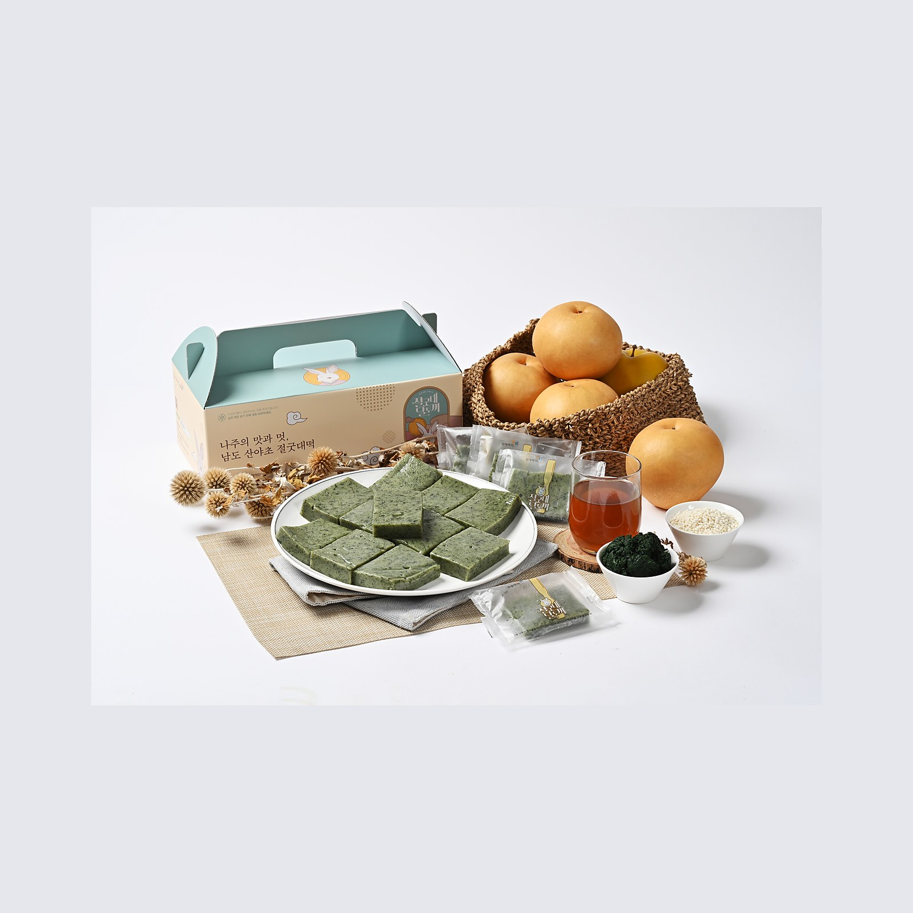
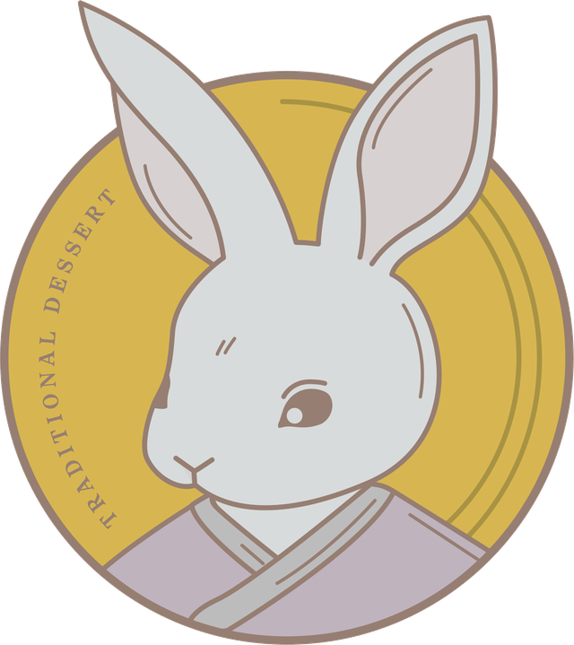
이바지 · 명절 · 예단 · 회사 선물
절굿대떡을 이바지에 쓴 것은 맛도 맛이지만 건강을 생각한 떡이라는 믿음 때문이었습니다. 명절과 예단, 회사 접대에 두루 나갑니다.
떡과 오란다
맛의방주 등재 떡과 나주배 오란다
한 개씩 포장
나눠 드리기 좋게
달토끼 상자
보자기·종이 가방까지
보냉 상자 배송
받으신 날 가장 맛있게
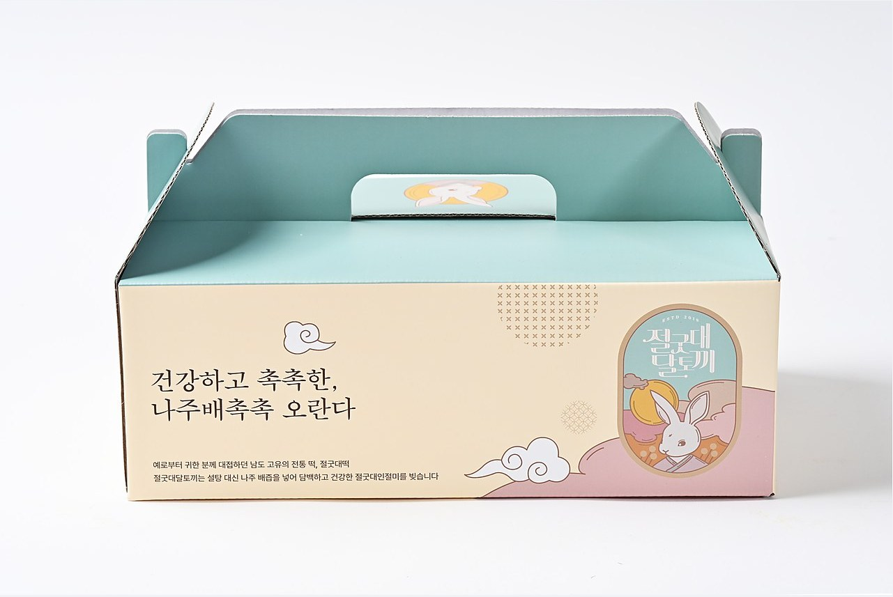
달토끼가 그려진 선물 상자
절굿대떡 · 나주배 촉촉오란다
보자기 포장
구성
받는 분이 여럿이어도 나누기 쉽고, 남으면 하나씩 냉동해 두었다가 꺼냅니다. 계절에 따라 나주배를 함께 넣기도 합니다.
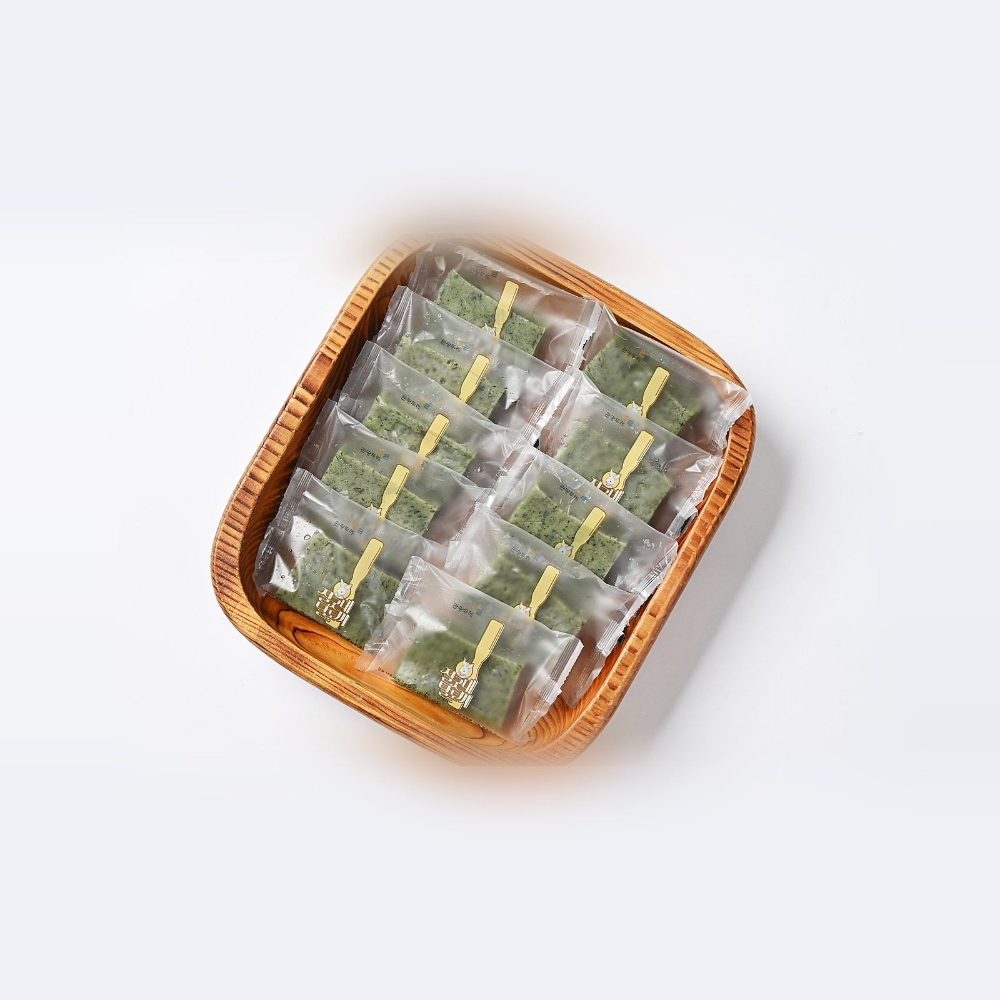
절굿대떡
콩고물 인절미 · 낱개 포장
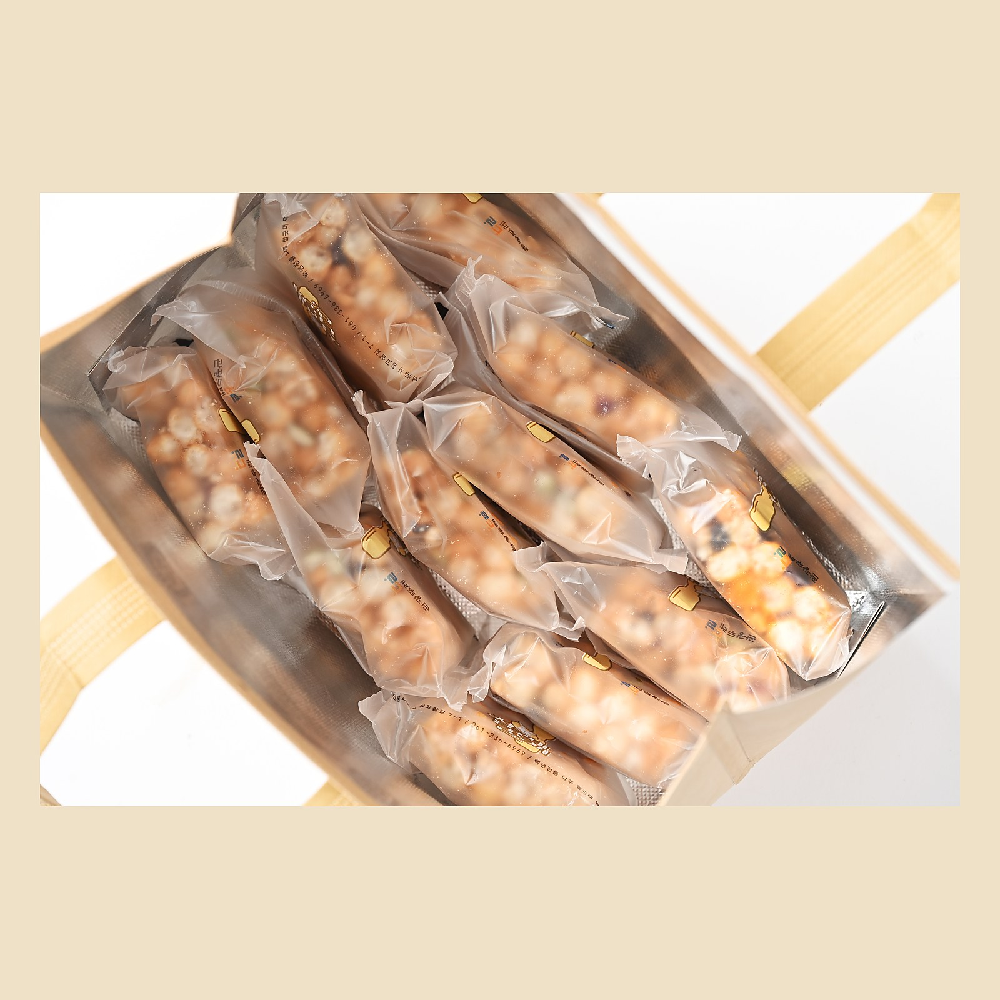
나주배 촉촉오란다
여섯 가지 견과 · 낱개 포장
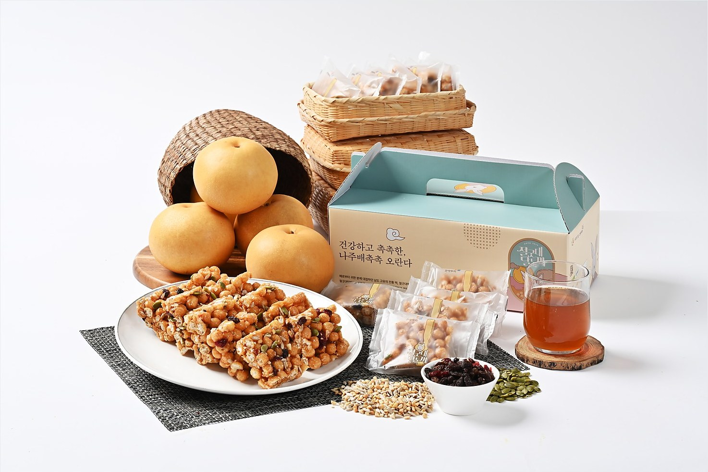
나주배와 함께
계절에 따라
포장
상자에 담고, 원하시면 보자기로 쌉니다. 들고 가시기 좋게 종이 가방을 함께 드립니다.
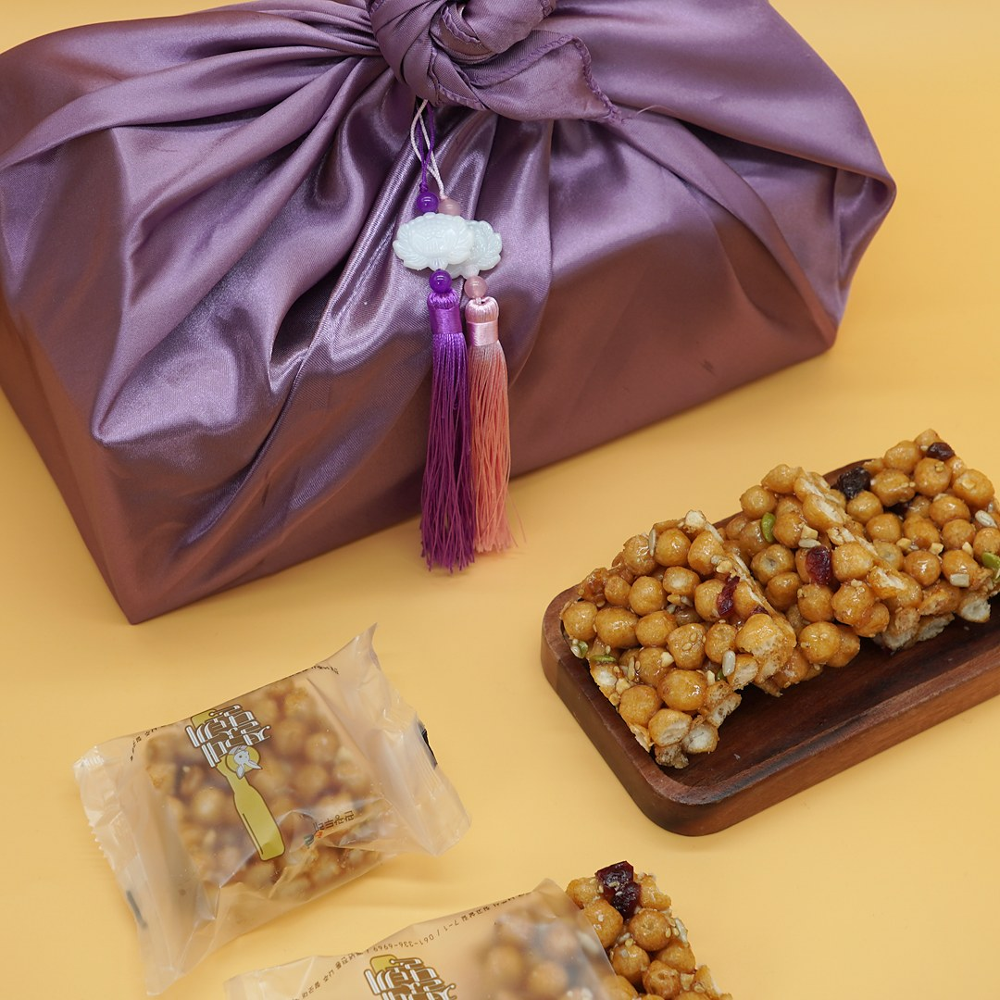
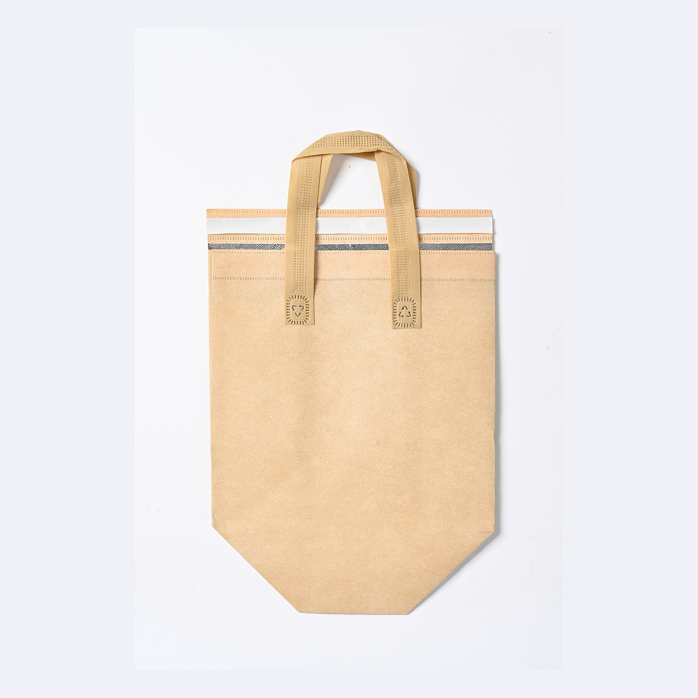
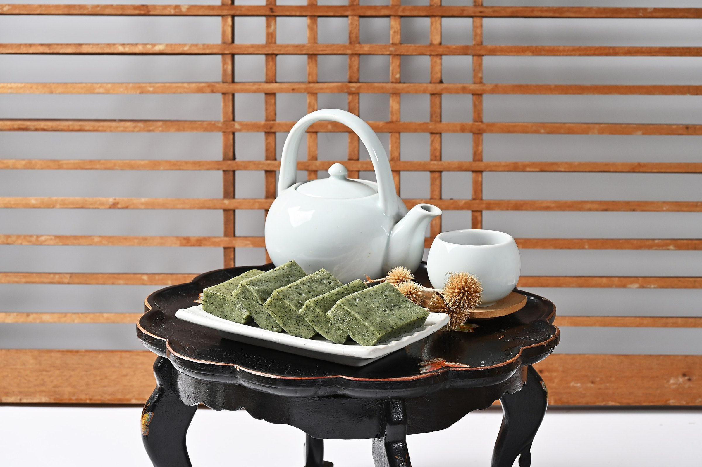
쓰임새
이바지
목사골 양반들이 이바지로 쓰던 떡. 양가에 건네는 첫 인사.
명절
부모님 댁에, 명절 인사에.
예단
보자기 포장으로 격식을 갖춥니다.
회사 선물
거래처·직원 답례. 수량은 상의해 정합니다.
배송
택배는 보냉 상자에 담아 보내고, 받으신 날 드시는 것이 가장 좋습니다. 남은 떡은 굳기 전에 냉동해 주세요.
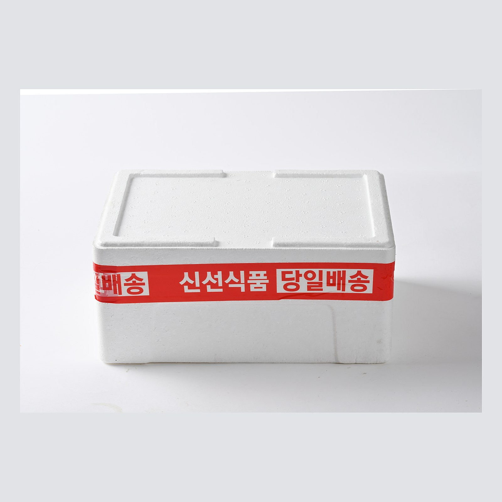
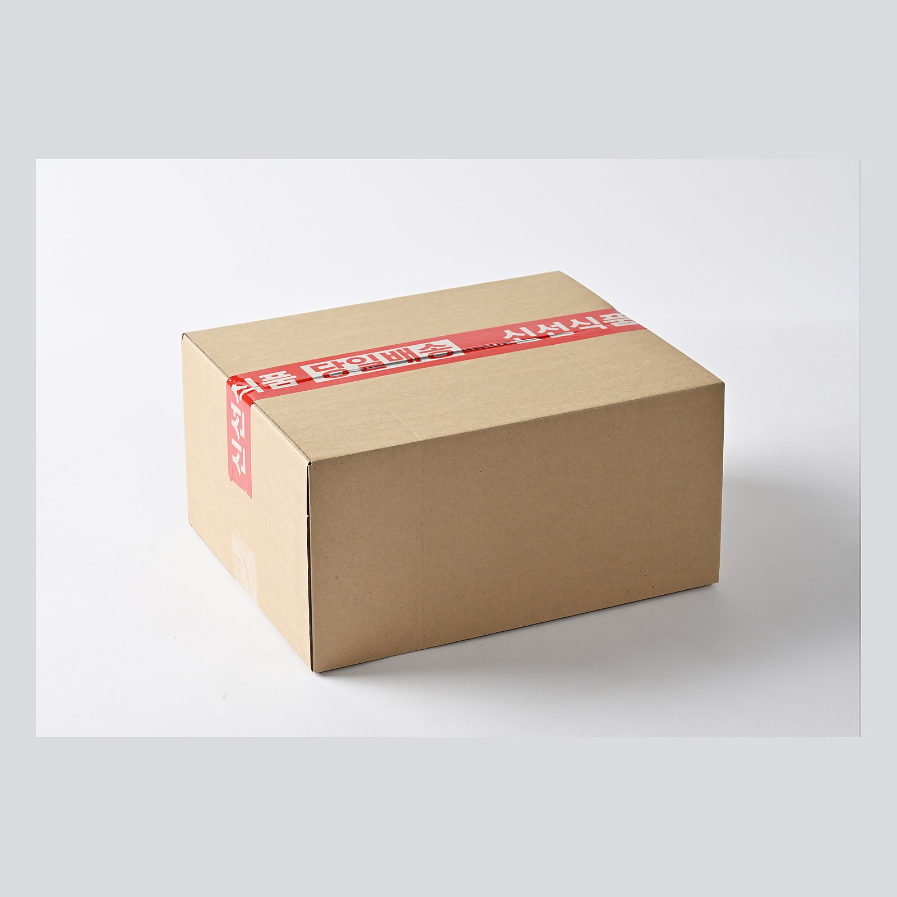
제품정보
제품명
절굿대달토끼 선물세트
구성
절굿대떡 · 나주배 촉촉오란다 (수량은 주문 시 상의)
알레르기
대두(콩고물) · 땅콩 · 참깨 함유
원산지
국내산 (절굿대: 나주 자체 재배)
포장
낱개 포장 · 달토끼 상자 · 보자기(선택) · 종이 가방
보관방법
떡은 냉동, 오란다는 냉장·냉동 권장
배송 방법
보냉 상자에 담아 택배
인증
맛의방주 등재(2022) · 사회적기업(제2023-247호) · 고향사랑 답례품(2024)
제조원
농업회사법인 주식회사 절굿대 · 전라남도 나주시 징고샅길 7-1
주문·문의
061-336-6969 · 매일 09:00 – 21:00